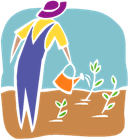

Итоговый тест
1. Отметь "да" или "нет"
Имена, фамилии отчества людей пишутся с большой буквы
да
нет
2. Отметь "да" или "нет"
Клички животных пишутся с большой буквы
да
нет
3. Отметь "да" или "нет"
Названия городов пишутся с маленькой буквы
да
нет
4. Отметь "да" или "нет"
Названия улиц пишутся с маленькой буквы
да
нет
5. Отметь "да" или "нет"
Названия рек, озёр, морей пишутся с большой буквы
да
нет
6. Найди и отметь правильный перевод слов
а. посуда
нан
ыдыс
кәмпит
б. овощи
қызанақ
пияз
көкөністер
в. фрукты
шие
жемістер
жүзім
7. Выберите название столицы нашей Родины
Астана
Алматы
Атырау
Кокшетау
8. Отметь слова, которые относятся к посуде
чайник
ложка
молоко
фрукты
9. Отметь слова, которые относятся к овощам
груша
помидор
лук
виноград
10. Отметь слова, которые относятся к фруктам
слива
персик
яблоко
свёкла
11. Отметь имена людей
Алеша
Мурзик
Шарипова
Сауле
12. Выбери фамилии девочек
Иванова
Сагитов
Орлов
Сапарова
13. Отметь названия рек
Или
Петропавловск
Ишим
Балхаш
14. Подбери предложение к картинке

Девочка ест конфеты.
Девочка наливает чай.
Девочка поливает огород.
Девочка собирает овощи.
15. Выбери правильный ответ на вопрос
Кто собирает виноград?
Дети собирают вишню.
Дети собирают виноград.
Дети посадили виноград.
Дети поливают виноград.
16. Составь слова из слогов
огу
сли
поли
чай
ва
рец
ник
вать
17. Установи соответствие
мальчик
девочка
учитель
Канат
Денис Иванович
Рая
18. Вставь в слова пропущенные буквы
Виногр
д, я
локо,
вощи, в
лка.
19. Вставь в предложения имена людей, используя слова для справок
Девочка
ест конфеты.
Мальчик
пьёт молоко.
Слова для справок:
Маша, Руслан.
20. Составь из набора слов предложения, начиная с выделенного слова
Собака,
конфеты, Шарик, любит.
.